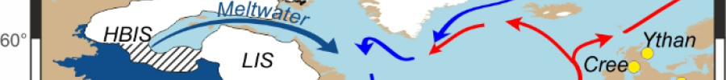

Welcome
I am a lecturer in Physical Geography and Environmental Science at Leeds Beckett University I am interested in the Earth System, particularly the interactions between, ice sheets, oceans and climate and specialises in reconstructing sea-level change in order to understand ice sheet histories. I have a broad interest across the subject area and continues to work and develop projects to study sea-level change and the use of GIS and remote sensing.
Please contact me if you have any questions or would like to discuss potential projects.